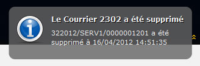

Depuis la fiche du courrier il est possible d'ajouter le courrier courant aux Favoris. Ces
courriers sont ensuite accessibles depuis le lien de l’Accueil ou du menu de navigation.
L’ajout d’un courrier dans les favoris se fait en cliquant sur l’icône  depuis la fiche du courrier. Une fenêtre modale s’ouvre alors
permettant de renseigner le Titre du Favori, de l'associer à une
Catégorie et d’Activer le Suivi de ce
courrier.
depuis la fiche du courrier. Une fenêtre modale s’ouvre alors
permettant de renseigner le Titre du Favori, de l'associer à une
Catégorie et d’Activer le Suivi de ce
courrier.
Lorsque l'utilisateur sélectionne la catégorie dans laquelle placer ce favori, il peut soit taper le nom d’une nouvelle catégorie, soit sélectionner une catégorie existante en tapant les premières lettres de son nom et en sélectionnant la catégorie dans la liste des suggestions qui s’ouvre alors sous le champ ou bien sélectionner la catégorie dans la liste de toutes la catégories en cliquant sur la flèche à droite du champ.
De plus il est possible de suivre les courriers favoris afin de recevoir une notification si le courrier est modifié ou supprimé en cochant la case Activer le suivi.
La page Favoris affiche les courriers favoris sous forme arborescente. Les nœuds racines définissent des catégories ; les nœuds feuilles des courriers.
Lors du survol d'un nœud de l'arborescence certaines actions peuvent s'afficher :
L'icône affiche la fiche du courrier,
L'icône
 retire le nœud des favoris (le courrier n'est pas
supprimé),
retire le nœud des favoris (le courrier n'est pas
supprimé),Les icônes et permettent de savoir si le suivi est activé ou non mais aussi de changer l'état du suivi. Si l'étoile est rouge, cela signifie que le suivi est activé pour le courrier.
En double cliquant sur l'intitulé d'un nœud il devient possible de le modifier. De plus, l'arborescence peut être entièrement réorganisée en glissant/déposant les nœuds. Il est ainsi possible de déplacer un courrier vers une autre catégorie ou encore de modifier l'ordre des nœuds dans l'arborescence.
La zone Catégorie permet d'ajouter un nouveau nœud racine (catégorie) à l'arborescence.
L'activation du suivi pour un courrier permet à l'utilisateur d'être notifié en temps réel de toute modification apportée sur ce courrier.

![[Note]](images/admon/note.png) | Note |
|---|---|
Un courrier suivi qui a été modifié/supprimé s'affiche en rouge dans l'arborescence Un courrier supprimé est rayé dans l'arborescence |